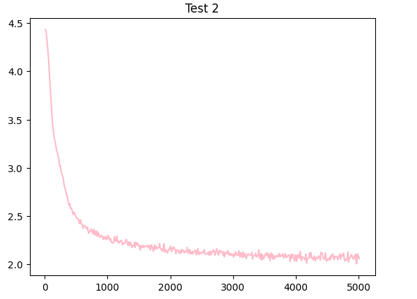
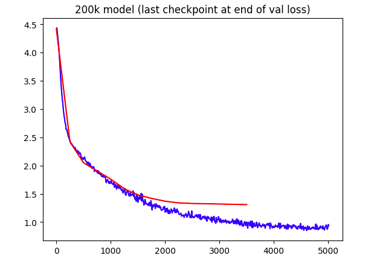
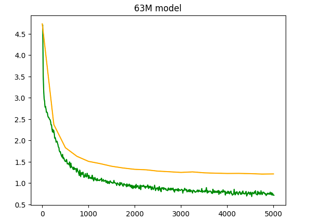
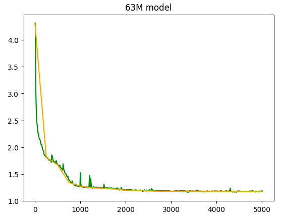

This is building the theories in this tweet. I thought it would be a good idea to get into Interpretable AI and try out a theory
The Initial Idea was to use a synthetic dataset in the format from the tweet, Question, related fact, and answer. Started making a small synthetic dataset with several LLMs, os and closed, to try and make sure no specific model biases made it in.
Ended up with a ~200Q dataset, training a transformer with ~1.7k parameters, it's astonishing that a model with 1.7k parameters reaches a 2.9 val loss from a 4.4 init (2 layer 2 head 4 embed). I retried with ~30k parameters (8 layer 8 head 16 embed), and it reaches a val loss of ~1.95 from the same 4.4 init.

I scaled the model further to reach a reasonable loss, building a new transformer model with ~207k parameters (16 layer, 16 head, 32 embed). This larger model was able to achieve a final validation loss of around 1.3, a more sizable transformer architecture can effectively learn the patterns in the synthetic dataset.

Theoretically, the model has several times more parameters than tokens in the dataset, so it could effectively encode all the tokens and facts in its parameters. Keeping a close eye on the validation loss, and I'm not seeing any signs of overfitting yet. Even though the validation loss is still going down, the training loss is dropping in much bigger jumps, looks like the model wants to overfit. To address this, I'll need to try even bigger models to see if I can find the right balance between learning the patterns in the data and avoiding excessive overfitting.
Tests show a need for bigger models:
{B}Who is the first person to malut ol in mider 4.1 peeers? (The first person to swim mom acrounge as magden ond his runage 40 miles): Reongs{E}
{B}What is the largest pommal on Earth? (The largest iver on Earth is the Lunatalind, which can reach up to 100 feet length ond a the prund 2 pouph): Rounea{E}
{B}Who is the first person to climb Mimb? (The first person to climb allliire is Mount Pl Evere is Mourr, who the comel 139 ale): Runal Re Lob 1{E}
After trying larger models, the not enough data issue persists, the overfitting happens in 5 steps or less, so I added the open-platypus for some logic/math and latex in a similar format, It should help with the overfitting, while also still remaining useful to the model.
After a while, the models still working, scaled up to 63M parameters, fits well on 2xT4, train/val loss still drop around 750 steps, went for a total of 7 epochs to reach a final loss curve of ~1.2 val

Sampling with facts:
{B}What is the capital of Canada? (The capital of Canada is
Ottawa, a city located in the province of Ontario):
model: Canada{E}
start:
{B}How many planets are in our solar system? (There are
8 planets in our solar system: Mercury, Venus, Earth,
Mars, Jupiter, Saturn, Uranus, and Neptune):
: Solar Popertian{E} ,
Mercury{E}, Neptune{E},
Uranus{E}
While I haven't tried attention masks yet, the model definitly prefers words to numbers in these Q's, which makes sense, as very few of them use numbers. Meanwhile the model would also have massive amounts of Math/Latex from most of the dataset, seen further below, so I think the attention masks would be somewhat divergent by question type? Intrested to see that (If anyone can implement this, contact vatsapandey123@gmail.com)
no fact given:
{B}What is the capital of Canada?:
model:
(The capital of Canada is the capital of Canada, which
is an elementary solution to the other two, which is a
fundamental concept.) : The capital of Canada, the
capital of Canada, costs
$\\{1,2,3,5,5,5,10,10\\}$.\n\nWhat is the probability
that the capital of Canada and the other two capital
coins?
start:
{B}How many planets are in our solar system?:
To find out how many planets are in our solar system, I
need to multiply it by the number of planets. The number of
planets are in our solar system, so I can use the rule of
mathematical and mathematical analysts to find the number of
degrees in a group of n planets.
it chooses to hallucinate the fact to match data patterns, then goes on yapping on with logic text I supplemnted it with, though its still kinda working? The fun part is repetition wont go away till temp >= 1.0, and temp=1.5 gives good answers, to quote Karpathy, "There are no bangers below temp 1.0"
(Model bloopers)
\n diabetes: Earth, Jack, Saturn, Mupiter, Earth Ander\n
depth_ball_recover(arr): Media Runab Saturn\n
{B}Who workers the largest planet in the world about to secure the wool in the wool system? : Some placing of a planet in which an involves is sharper than to sine? To see what volume off this word is sharpes the wool intake, I can use long dessert algebra to find the parse of the parabola
The model is avalible at Vatsadev/mem-models, real.pt and meta.pkl are all that are needed for inference
Thanks to @CFGeek for mentioning it, the attempt with telephone number retrieval actually makes alot more sense.
dataset generation code:
import random
names = ["Aaran", "Aaren", "Aarez", ...]
def phn():
p=list('0000000000')
p[0] = str(random.randint(1,9))
for i in [1,2,6,7,8]:
p[i] = str(random.randint(0,9))
for i in [3,4]:
p[i] = str(random.randint(0,8))
if p[3]==p[4]==0:
p[5]=str(random.randint(1,8))
else:
p[5]=str(random.randint(0,8))
n = range(10)
if p[6]==p[7]==p[8]:
n = list(i for i in n if i!=p[6])
p[9] = str(random.choice(n))
p = ''.join(p)
return p[:3] + '-' + p[3:6] + '-' + p[6:]
with open("out.txt", "a") as f:
for i in range(1000000):
arr = []
s = """"""
s += "{B}\n"
for i in range(5):
fname = random.choice(names)
lname = random.choice(names)
arr.append(f"{fname} {lname}: {phn()} \n")
s += f"{fname} {lname}: {phn()} \n"
s += "=========\n"
s += random.choice(arr)
s += "{E}\n"
f.write(s)
Partially trained, but it sort of works, accurate matched the format, just consistently getting them wrong as of now, needs more training.
{B}
Connor-David Caethan: 855-878-8790
Marty Caley: 789-788-7222
Chester Mustapha: 650-265-6220
Calley Chintu: 548-633-2604
Rubyn Marko: 707-072-2570
========
Chester Makensy: 490-675-7270
{E}
{B}
Cobie Reeve: 764-138-7770
Mustafa Malikinter: 970-063-7527
Caedyn Callin: 879-227-2254
Artur-Rahman Rico: 449-047-0275
Kameron Ross: 647-260-4297
=========
Kameron Malik: 407-727-2725
{E}
Now fully trained to 5k steps, val loss ~1.17:

It converged Rapidly, which made sense, its a synthetic task, but the random spikes are intersting, I have yet to see those for any NN, but Its also my first time with a fully trained run over 30M, could just be a scale thing.
models up as synthTok.pkl and synthModel.pt on Vatsadev/mem-models
Some Outputs:
{B}
Connor-David Caethan: 211-878-4290
Marty Caley: 729-784-4222
Chase Corey-James: 500-412-2204
Alessandro Jon-Paul: 526-441-7791
Arthur Jonothan: 491-744-6949
=========
Alessandro Jonothan: 461-267-5761
{E}
{B}
Jerrick Allan-Laiton: 460-462-9069
Kainin Kyrran: 269-681-9244
Calum Keeton: 706-472-0406
Kensey Muhsin: 722-682-6997
Chevy Jesse: 462-782-2926
=========
Jerrick Allan-Laiton: 696-664-7746
{E}
{B}
Kelso Joey-Jack: 506-182-9600
Korrin Kaileb: 222-446-5491
Anthony Aleksander: 461-787-4669
Marlin Che: 266-672-4721
Crispin Arda: 672-216-6746
=========
Anthony Aleksander: 490-681-6700
{E}
Like prev. models, it prefers letters over numbers, and in the names it gets wrong, its the last name vs the first name, the last name is wrong quite often (Kinda of the middle of the sequence in phone numbers and names?) Greedy/Near greedy (temp = 0.01), actually helps the model quite alot, as the model can get names correct,and the ends of numbers accurate, it actually matches my work in making Transformers do math, where they did the same thing, curious to see that in a text retrieval task though, over arithmetic.
It does have repetition issues, but I find it intresting for the model picking one Aran, from all the rest, and it does manage to match a numbers beg/end
{B}
Aristotelis Arann: 572-444-6666
Aristotelis Arann: 760-677-6666
Aristotelis Arann: 506-744-2626
Aristotelis Arann: 560-766-0666
Aristotelis Arann: 566-746-6666
=========
Aristotelis Arann: 766-666-6666
{E}
{B}
Aran Alex: 766-777-9666
Aran Alexx: 666-677-6666
Aran Alexx: 666-714-9606
Aran Alexx: 666-764-6696
Aran Alexx: 606-666-6666
=========
Aran Alexx: 766-776-9666
{E}
Trying to prompt it with a single name instead of 5, it still has some expectances here that it just goes with, even though 5 names arent provided
{B}
Kelso Joey-Jack: 506-182-9600
======
Aran Kelso: 666-477-9666
{B}
Kelso Joey-Jack: 506-182-9600
======
Aristotelis Arann: 766-746-6666
{B}
Kelso Joey-Jack: 506-182-9600
======
Aran Arann: 766-774-6666
Trying out the whole thing with missing names:
prompt:
Kelso Joey-Jack: 506-182-9600
Korrin Kaileb: 222-446-5491
Anthony Aleksander: 461-787-4669
Marlin Che: 266-672-4721
Crispin Arda: 672-216-6746
=========
Cristobal Rios: # star trek!
outputs:
Cristobal Rios: 566-466-9669
Cristobal Rios: 706-646-6666
Cristobal Rios: 666-466-9666
Cristobal Rios: 566-666-6069
Cristobal Rios: 666-766-9666
Cristobal Rios: 666-646-6666
Cristobal Rios: 566-766-9666
Cristobal Rios: 666-666-6666
Cristobal Rios: 566-766-9666
Cristobal Rios: 666-646-6666
Some conclusions:
sometimes its random numbers, or switched with ones in-context (506 -> 706, 466 -> 446), or in-context ends (many have X669 or 96XX endings), or just pulled from the depths of the models weights, like 666 being extremely common, though it may be dealimg with some repetition
from both tasks overall, I would say that a transformer prefers in context first before moving to the weights, and in-context appears to pay more attention to the beg/end of numbers? Though attention maps need to be seen
the facts were harder and less conclusive, but from synth data, it clearly can retrieve in context facts, and hallucinates by stiching things together, or making jumbled versions of things in context, similar to the idea of a memory fault
These conclusions come from a 256 ctx model. 32k/128k models are getting better and better by the day, and gemini shows new breakthroughs at 1M ctx and 10M ctx, their evals must be crazy. Sholto Douglas dropping alpha hints in his tweets? :)
While this ultimatly failed, I found intriguing results in the probabiities, which are rather easy, just get the probs from the generate function.
side note If anyone makes a working NanoGPT version, email me (vatsapandey123@gmail.com), but I did find good things to start with:
code for probs:
dec = {...}
embd = [...]
s="..."
for i in range(len(embd)):
embdx = []
charx = []
for j in range(len(embd[0]):
if embd[i][j] != 0:
embdx.append(embd[i][j])
charx.append(dec[j])
print(embdx,charx,s[i])
# format, probs, tokens, picked_one
[1.4625e-31, 1.0], ['=', '{'], ['{']
[1.0, 1.4252e-21], ['B', 'E'], ['B']
[1.0], ['}'], ['}']
[1.0], ['\n'], ['\n']
[1.0, 5.6757e-14, 1.8554e-07, 6.9144e-13, 1.904e-17], ['A', 'C', 'K', 'M', 'R'], ['A']
[1.9187e-27, 0.017986, 2.3679e-31, 0.98201], ['b', 'l', 'n', 'r'], ['r']
[0.8808, 0.1192, 6.8536e-20, 8.1363e-09, 2.0696e-21], ['a', 'i', 'r', 't', 'y'], ['i']
[2.1705e-29, 4.1399e-08, 4.4163e-33, 1.0], [' ', 'a', 'h', 's'], ['s']
[1.0], ['t'], ['t']
[1.0], ['o'], ['o']
with such a small vocab size (70) and very clear formats from the synthetic data, the distribution is very biased towards specific tokens in specific positions more surprising was the name letter probs collapsing into perfect certainty within 4 letters, but there are only 2000 names encoded within 63M parameters
With number encodings, it gets more varied along with the missing
numbers being more unsure, (string
{B}\nAran Alex: 696-677-6666 ====== Cristobal Rios:)
...
([0.0298, 0.0181, 0.1335, 0.5984, 0.2202], ['2', '4', '5', '6', '7'], '6')
([0.01, 0.01, 0.0272, 0.01, 0.8993, 0.0272, 0.0165], ['0', '1', '2', '4', '6', '7', '9'], '9')
([0.1661, 0.005, 0.0136, 0.005, 0.7442, 0.005, 0.0611], ['0', '1', '2', '4', '6', '7', '9'], '6')
([0.0297, 0.0066, 0.0066, 0.5958, 0.3613], ['2', '4', '5', '6', '9'], '6')
([0.0408, 0.1108, 0.015, 0.8185, 0.015], ['0', '2', '4', '6', '9'], '6')
([0.1119, 0.0412, 0.0092, 0.8266, 0.0056, 0.0056], ['0', '2', '4', '6', '7', '9'], '6')
([0.0384, 0.1043, 0.0233, 0.7708, 0.0633], ['0', '2', '4', '6', '9'], '6')
...
it looks greedy, but uses multinomial sampling, visible when 5 toks are choices (all of this is done with topk=5, stable)
almost got the attention matrix per head out of the code, but couldnt figure out how to pull it out of the Optimized flash-att cuda kernels, and The Default nanoGPT attention is alot more mem-expensive, needs a missing bias, so I need a retrain, but with that are several cuda errors, so will probably move to a better implementation/try to get better at using matrices.